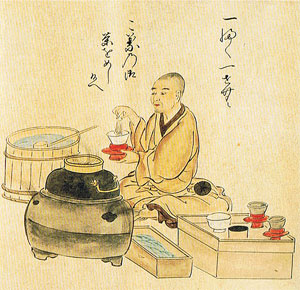

History

Green Tea was first introduced to Japan in the early 9th century during the Heian period. Two Japanese monks, Saicho and Kukai, visited China during this time to study Buddhism. On their return to China, they brought with them some green tea seeds.
At first, this tea was used and drank exclusively by the imperial family, Buddhist monks, and the elite. Years later, in 1191, another Buddhist priest named Eisai brought back green tea seeds from China and planted them in various regions in Japan. Eisai was the one who eventually popularized green tea in Japan and is credited for his influence on Japanese tea tradition and for introducing tea to the Samurai classes. Ahead of his time, Eisai was aware of the health benefits of drinking green tea and advocated for it to be shared by everyone.
Afterwards, tea drinking gained momentum and began to be engrained into Japanese society. Tea ceremonies gained popularity along with your every-day casual drinking. The act of drinking tea was common throughout all social classes. Through this one plant, many activities and traditions were born: tea tastings, the art of making tea, ceramics and design of drinkware and tools, and tea ceremonies.
